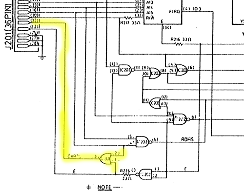

ok
Following "features" of the vectrex were found by me on the vectrex systems I own. Since the vectrex is partly an analog machine with by now fairly old hardware it seems that different machines do react slightly differently.
Following "differences" were observed, some are due to manufacturing differences, some due to different BIOS versions and some due to aging (capacitors) or usage of different hardware parts (VIA).
If you use BIOS routines and do not try to optimize to the extreme most of these difference do not need to concern you.
VIA: delay of SHIFTREG
VIA: 9 shift bug
VIA: stalling of the SHIFTREG
Analog: zeroing (time untill the integrators are completely zero)
Analog: integrator retain ?
differences in "weight" (scale and strength)
sampling to the amplifier circuit
buzz / no buzz (CART line)
different dac delay
The vectrex uses the VIA 6522 chip internally for lots of stuff. The chip was manufactured by at least 5 different companies and in different "generations" from those manufacturers.
The vectrex was only build over a small period of time, nonetheless different versions of the chip were used.
The result being that even though it is always the VIA 6522 which was put into vectrex, the chip might behave slightly differently. One difference is the delay the actual shifting starts after accessing the shift register.
Experiments with different vectrex (over the world) show that there are at least these "shift delay" versions:
delay of 0 cycles
delay of 1 cycles
delay of 2 cycles
delay of 3 cycles
While one does not see the difference "often", there is one particular area where you CAN see that difference. If you write optimized routines for bi-directional raster graphics (of text output using a raster font)
Note:
I am not sure anymore if this phenomenon is cased by the SHIFTREG delay. A delay is happening somewhere - that's for sure, and it is vectrex dependend - but what the actual cause is, is not verified.
Example:

ok

not ok
The vectrex uses the VIA 6522 and the models of VIA it uses have some bugs. One of its bugs is, that a complete shift cycle does not shift 8 times for one byte, but 8+1 (with the mode used by raster output, SHIFT out under system clock Mode %110). The last shifted value is repeated. So that e.g.
0101 0101
[e.g. part of a bitmap]
results in an output like:
0101 01011
In the normal "text" routines you do not see that, since letters always end with a "0" and a double "00" result just in a little bit more space between letters. In a "continues" bitmap you must align or tweak the bitmap thus, that you do not (or only barely) see bit doubles.
It certainly is even more difficult to do if you are working with "diagonals", since you can not get rid of a double step.
Example:

ok

not ok
The SHIFT register of VIA is prone to "stalling". Stalling here means, shift out the last shifted value indefenitly (or till someone changes VIA settings again). The stalling can happen, if the shiftregister is accessed (shifting is resetted) befor the current shift cycle is finished (befor all 18 cycles have passed).
Different VIA version stall at different "times". Known cycle values
15 cycles
14 + 15 cycles.
One "famous" example of possible stalling is the Thrust title logo, which intercepts the current shift cycle at cycle count 14. On some vectrex (3. generation - no buzz) the last letter of the title "streches" to the edge of the screen.
Example:

Thrust
The reference point of all vectors drawn is always "point zero", which is the middle of the vectrex screen. Point zero is the only point on the screen where you can go "directly" - all other movements are done in relation to the current position.
Positioning is internally done using (analog) integration circuits which sum up values (positive or negative) you provide to the digital to analog converter. The x and y sum of these values represents the position on screen.
The position (since an analog) value is some voltage that is held using the integration circuits.
Going to point "zero" is in principal nothing more than poking a "0" to a specific memory location which in turn represents a "switch" that grounds the integration circuits and thus resets them to zero (at least that is my understanding).
The act of "grounding" is in simplistic terms the discharging of a capacitor. Due to age, variants and being analog hardware over all - the discharging (the zeroing) takes a certain amount of time. The time depends mainly:
start value of the capacitors
quality of capacitors
age and other analog invariants
Electronic laws even state that capacitors never get full discharged - in general if you leave the lights on while discharging you will see some sort of "e" function as the discharging happens.
What it boils down to is - if you optimize your programs to use the least possible value for discharging (and thus saving some time) - the resulting program might look slightly different on another vectrex.
The following is some "guess work" and describes a phenomenon I have witnessed but due to lack of electronic wisdom have not the knowledge to fully explain (if you know more - please tell me).
It is evident, that a move from position 0,0 to another far away position, does not always result in the exact same position (experience have been 1-2 mm off).
The resulting position is altered slightly by the position the vector beam was at before the last zeroing (regardless of how long you discharge). There are different possible sources:
the integrator value
the last "sample and hold" values
the never "complete" zeroing
I experienced this behaviour under various circumstances, but the most evident occured during the use of synced printStr output:
Example:
Print String
What you see above is a string printed, each line of the string was positioned from zero, that way each line matches exactly the one above and you do not get that italic look of the classic vectrex strings. Notice the first line is "off". This is because the first line had a different "previous" vector position befor its zeroing.
If you do your own vectrex programming this "retain" thing might be "real" for you too - another example from Karl Quappe.
The main Karl Quappe screen is divided into different sections:
strings (score, level, life)
borders (like the homes, the timer and the "middle" lane), these borders have fixed positions
automatic objects (everything that moves)
manual object (the frog you can move)
Notice the order I used above. This is the order I "must" use. The first two bullet points have fixed screen positions. If in my update round I print them - say - after I print the frog, then the next fixed part I draw right after the frog, ever so slightly MOVES with the frog (~1 millimeters).
That is very much noticable and disturbing. Even worse I seem to have a very good vectrex - I have reports of some other people - where that effect is even worse.
In "general" you can calculate a position on screen using the formular:
scale * strength
Which results in a positions (if a maximum of scale = $ff is assumed) with a range form -32768 - +32767.
Out of the general the formular is not 100% correct. If you want to position disjunct objects the accuracy of the above might be sufficient. But if you want to place objects EXACT you must either use the same strength or the same scale, otherwise the result will be slightly off.
With my vectrex the "strength" seems to be a little bit "strengthier" than the scale. I don't know if that is a general rule though.
The vectrex ng (aka no buzz models) have some different internal circuitry. Using samples the "classic" way does not work (well) anymore. For some reason or another the sampled sound is barely audible anymore. Reason - unkown.
The only time that bothered me was, when I couldn't use Vectrex32 with my no buzz model. But this might also happen when using e.g. VecMulti from Richard Hutchinson.
For more information what this is about I quote a forum post (by a person called "flip" - http://vectorgaming.proboards.com/thread/1271/multicart-on-buzz-models):
Hi,
I'm new around here, having bought a Vectrex a few weeks ago. Mine is one of the newer no-buzz models (serial 31xxxxx with the 7ADB rom), that have problems with some multi-carts. I found out the hard way, after ordering one of them.
Since I needed to open up my system anyway for some cleaning, I decided to poke around to get to know the insides, but also to see whether I could figure out what caused the problem. I tried to change the rom - which wasn't straightforward, since on the newer boards this is a 24pin chip compared to the 28pin ones on the older board. I replaced it with a rom adapter from a C64, which allows me to switch between rom images (B796 and 7ADB). But this made no difference for the multi cart.
After a few exchanges with the supplier of the cart, I began comparing the circuit as drawn in the service manual to what was happening on my board, especially in what IC202 (74LS00) and IC203 (74LS32) did. These trigger various chip enable and clock signals internally and on the cartridge port. And it turns out that they changed this circuit: on the newer models, the *CART signal is no longer generated and pin 32 on the cartridge port is simply not connected to anything (see detail of the schematic attached - the bit marked in yellow is no longer there). The OR gate on IC203 that creates this signal on the older boards is now connected to the OE pin of the ROM...
So i created an OR gate using two diodes (1N4148) and a pull up resistor (10k). The anodes should connect to pins 12 (E inverted) and 16 (Address line 15) on the cartridge port. The cathodes and the resistor should go to pin 32. And the other end of the resistor to GND. See the attached drawing. This "recreates' the *CART signal, and more importantly, brought the 72-in-1 cart to life on my machine!
You can of course add this circuit to the cartridge as well, though to avoid problems on older models, you'd have to make sure to cut the *CART signal from the console.
Hope this helps others, though no guarantee. If you have any questions, let me know...

vectrex_cart_fix.jpg

vectrex_main_diff.jpg
It seems that different vectrex versions can have different DAC delay values. The time between a value is written to the DAC and the receiving end actually gets the "new" value.
Granted you will most of the time NOT see this phenomenon. The only time I experienced it was when experimenting with curved vectors.
When doing curved vectors, you change the DAC while ramping is switched on (in normal drawing you do not change integration values while the beam moves).
My assumption is that this also has to do with the vectrex generation, although my vectrex samples I used for testing were only my three vectri.
So, while you will not see that often - if you DO use curved vectors, there might be a difference on different vectri.
All of the above effects can be - to some extend - emulated using vide. In the configuration settings you can toy around with settings. But in general if you experience weirdnesses or are prone to optimization and edging the above mentioned findings, you probably should use a couple of real vectri for your tests!